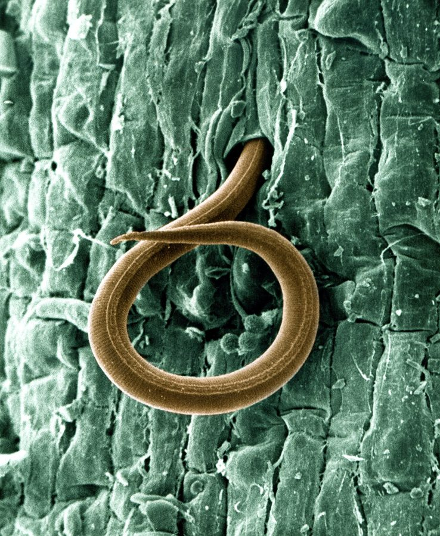

जड़ गाँठ सूत्रकृमिSouthern Root-knot Nematode
Meloidogyne incognita · Meloidogynidae · SFL-0009

- Scientific name वैज्ञानिक नाम
- Meloidogyne incognita (Kofoid & White, 1919)
- Family कुल
- Meloidogynidae
- Hindi हिंदी
- जड़ गाँठ सूत्रकृमि
- Local names स्थानीय नाम
- jad ganth sutrakrimi, jad ki ganth, ganth rog, root knot nematode
- Status here यहाँ की स्थिति
- uncertain
- Movement आवागमन
- Resident, here all year
- IUCN IUCN
- not evaluated
- Review समीक्षा
- audited and independently read
When to look कब देखें
Expected mainly in May, June, July, August, September, October. मुख्यतः मई, जून, जुलाई, अगस्त, सितंबर, अक्टूबर में अपेक्षित।
जड़ गाँठ सूत्रकृमि / Southern Root-knot Nematode
Meloidogyne incognita (Kofoid & White, 1919) — Meloidogynidae
जड़ गाँठ सूत्रकृमि — यह बहुत छोटा कीड़ा है जो मिट्टी में रहता है और पौधों की जड़ों के भीतर घुसकर काम करता है। किसान इसे नहीं देख सकता — पर देख सकता है उसका नुकसान: पौधे की जड़ों पर गाँठें, गाँठ-ग़ली जड़ें, पत्तियों का पीलापन, और पूरा पौधा सूखकर मरना। टमाटर, मिर्च, गाजर, मूँगफली, और दलहनों का यह बहुत बड़ा दुश्मन है। गर्मी में सबसे ज़्यादा नुकसान करता है।
Quick Identification त्वरित पहचान
| Feature | Description |
|---|---|
| Root symptom | Knot-like swellings (galls) on roots of infested plants; appear as beads on a string |
| Gall size | 1–5 mm diameter; yellowish-brown to dark brown |
| Gall density | Multiple galls, often clustered, deforming the entire root system |
| Root decay | Galls rot and become blackened as secondary infections occur |
| Above-ground symptom | Stunted, yellowing plants; wilting even when soil is moist; poor vegetative growth |
| Crop damage pattern | Patchy areas in the field where plants are stunted or dead; often worse in warm seasons |
| Soil type | Most severe in light, sandy, well-drained soils; less in clay |
Field tip: Uproot a stunted plant in the middle of the growing season and look at the roots. If you see knots or lumps on the roots (not just nodules from legume bacteria), and the root system looks gnarled or decayed, the plant is infested with root-knot nematode. The nematode itself is invisible to the naked eye; the gall damage is your diagnosis.
हिंदी — कैसे पहचानें: पौधा पीला पड़ा, सूखा-सूखा, और पानी दिया फिर भी ठीक नहीं हुआ। जड़ खोदकर देखो — अगर जड़ पर मटर जितनी गाँठें हैं, तो यह नुकसान है। गाँठ की जड़ें काम नहीं करतीं, इसलिए पौधा मरने लगता है।
Morphology आकारिकी
Biometrics (nematode body; note: nematodes are microscopic):
| Measurement | Range |
|---|---|
| Body length | 0.3–0.8 mm |
| Body diameter | 0.05–0.1 mm |
| Stylet length | 8–12 µm |
| Gall diameter | 1–5 mm |
Lifecycle stages visible to microscope only:
- Egg: Laid within the root gall in egg sacs; 0.08–0.12 mm.
- Juvenile (J2): Free-living in soil, infective stage; vermiform (worm-like), mobile, enters roots through root tip.
- Adult female: Sedentary within root tissue, pear-shaped, bloated with eggs; immobile; white, can be seen with microscope inside root sections.
- Adult male: Vermiform (worm-like), mobile, leaves the root to mate with females; less commonly found.
Root gall internal structure: Females and juveniles induce the root tissue to form giant cells (gall cells) — enlarged, multinucleated cells that serve as feeding sites. These sink the host's resources, causing visible swelling and decay.
हिंदी: सूत्रकृमि (नेमाटोड) बहुत छोटा है — आँख से नहीं दिखता। पर जड़ में पहुँचकर, मादा अंदर ही अंदर रहकर अंडे देती है। अंडों का थैला गाँठ बन जाता है। गाँठ में सूत्रकृमि के बच्चे बढ़ते हैं, और पौधे को खाते हैं।
Behaviour & Ecology व्यवहार और पारिस्थितिकी
Endoparasitic root feeder: Meloidogyne incognita is an obligate endoparasitic nematode — the entire female life cycle (except egg-laying) occurs inside the plant root. Juveniles (J2) are the only free-living, migratory stage. They:
- Penetrate the root near the root tip using a stylet (needle-like mouthpart)
- Migrate to the root's vascular cylinder
- Become sedentary and induce giant cell formation (feeding site)
- Mature, mate, and lay eggs in the gall
Soil survival: J2 juveniles survive in soil for months to years, especially in organic matter. They enter a cryptobiotic (reduced metabolic) state during winter or drought. The presence of plant roots — any roots — reactivates them.
Reproduction: Primarily parthenogenetic (asexual); a female alone can lay 300–500 eggs. Multiple generations per year in warm climates (3–4 in eastern UP).
Temperature and moisture: Optimal reproduction at 25–30°C and moist soil. Winter in eastern UP (November–February) slows but does not stop the lifecycle. Summer heat and dryness kill juveniles in the upper soil.
हिंदी: छोटा बच्चा (जूवेनाइल) मिट्टी में तैरता है, जब पौधे की जड़ को सूंघता है तो अंदर घुसता है। अंदर घुसकर, एक ही जगह बैठ जाता है, खाता है, बड़ा होता है, और अंडे देता है। गर्मी में जल्दी-जल्दी अंडे, सर्दी में धीरे।
Life Cycle / Phenology जीवन चक्र
| Stage | Duration | Notes |
|---|---|---|
| Egg within gall | 7–10 days | Laid in egg sacs; protected by root tissue |
| J1 (first juvenile) | 1–2 days | Within egg; moults inside egg |
| J2 (infective juvenile) | Variable | Emerges from egg; free in soil; seeks roots; can survive months without host |
| J2 → adult female | 3–4 weeks | Inside root gall; moults 3 times while feeding |
| Adult female fertile | 2–4 weeks | Lays eggs; lifespan 1–3 months inside the root |
| Multiple generations | 6–10 weeks per generation | Three to four complete cycles in warm season |
| Winter dormancy | November–February | Most J2s in soil become cryptobiotic; minimal reproduction |
On susceptible crops (tomato, chilli, pea): From infection to visible galling takes ~4 weeks. Heavy infestations develop in 2–3 months.
Cold break: Eastern UP winters (min. 10–15°C) slow but do not eliminate the nematode; survival depends on soil moisture and host presence.
हिंदी: गर्मी में हर 6-10 हफ्ते में नई पीढ़ी। सर्दी में सुस्ती। अगर जमीन में बीमार पौधा गिरा है या गल रहा है, तो सूत्रकृमि वहीं रहता है।
Host Plants and Damage आहार और नुकसान
Major hosts (observed damage in eastern UP):
- Vegetables: Tomato, chilli/capsicum, okra, brinjal, carrot, beet, radish, bean
- Legumes: Chickpea, lentil, pea, groundnut, soybean
- Fruits: Guava, mango (nurseries)
- Flowers: Rose, marigold (in nurseries)
- Spices and condiments: Turmeric, ginger (significant losses)
Non-hosts (resistant or unsuitable): Wheat, rice, corn, and cruciferous crops (cabbage, cauliflower, mustard) — not preferred, used as rotation crops.
Damage quantified: Yield losses can be severe, up to total, depending on initial inoculum levels, susceptibility of the cultivar, and rainfall pattern. In warm, wet soil, losses on susceptible tomato or chilli can be very heavy.
हिंदी: टमाटर, मिर्च, आलू, मूँगफली, दलहन को बहुत नुकसान। गेहूँ, धान, और फूलगोभी को कम।
Agricultural / Human Relevance कृषि प्रासंगिकता
The economic impact: Root-knot nematode is one of the most damaging soilborne pathogens in eastern UP vegetable cultivation. A single cropping season can render a field unusable for susceptible crops for 2–3 years without intervention.
Management — in order of priority:
- Resistant and tolerant varieties (most effective):
- Tomato: Arka Samrat, Hisar Arun, ICAR-resistant hybrid
- Chilli: NP-46, Jwala (some resistance)
- Okra: Clemson Spineless
- Legumes: Puspha (lentil), Upahar (pea), local cultivars
- Crop rotation (8–12 months minimum):
- Follow susceptible crop with non-host: wheat, rice, maize, or crucifer (2–3 crops).
- Proper ploughing to incorporate crop residue and expose J2s to sun and predation.
- Soil solarization (if equipment available):
- Transparent plastic sheet over wet soil for 4–6 weeks (peak summer) kills upper-soil J2s and some eggs.
- Cost-effective on high-value crops (nurseries, tomato).
- Clean planting material:
- Use nematode-tested or nematode-free seedlings where available.
- Nursery beds treated with fumigation or solarization.
- Field sanitation:
- Remove severely infested plants and roots; burn (do not compost).
- Do not reuse nursery soil without treatment.
- Organic amendments:
- Neem cake: 500 kg/ha applied 2 weeks before planting; contains nematicidal compounds; also improves soil fertility.
- Farmyard manure (well-decomposed): enriches soil biology; antagonistic microbes suppress nematode.
- Biological control (emerging):
- Purpureocillium lilacinum (fungus) and Bacillus firmus (bacterium): research-stage applications; not widely available.
- Chemical nematicides (last resort; avoid if possible):
- Carbofuran (now restricted in India due to toxicity).
- Fluensulfone: newer, less toxic; registered for limited crops.
Extension guidance: The ICAR Directorate of Plant Protection (ICAR-DPP) and Uttar Pradesh Agriculture Extension Services recommend resistant varieties + crop rotation as the most sustainable approach for smallholder farmers.
हिंदी: पहले रोधक किस्में लगाओ। अगर खेत बहुत बीमार है, तो 2-3 साल के लिए गेहूँ-धान-मक्का बोओ। धीरे-धीरे सूत्रकृमि कम हो जाएगा। नीम खली डालो; जल्दी सड़ी गोबर डालो।
Expected Locally स्थानीय रूप से अपेक्षित
Not a field record. Written from published accounts for eastern Uttar Pradesh. No confirmed local sighting yet — if you have seen it, that is what the atlas needs.
अभी तक स्थानीय पुष्टि नहीं। यह विवरण प्रकाशित स्रोतों से है, किसी अवलोकन से नहीं।
Meloidogyne incognita is the dominant root-knot nematode of warm-season vegetable cultivation in Basti and Gorakhpur districts. It is expected in every village's vegetable plots and market-garden soils, particularly where tomato, chilli, and okra are grown year after year. The first visible sign is stunting in May–June (start of warm season); severe wilting and yield loss in July–August. Farmers reporting "soil sickness" (particularly on 10–20 year-old vegetable plots) are likely encountering high nematode populations. The disease is more severe in light, well-drained sandy soils than in heavy clay.
Distribution वितरण
Global range: Pantropical and subtropical; found in warm regions worldwide. One of the most widespread plant-parasitic nematodes.
In India: Distributed throughout tropical and subtropical regions; most damaging in vegetable-growing zones of the Indo-Gangetic plain, Deccan, and coastal regions.
In Uttar Pradesh: Present in all districts with intensive vegetable cultivation; especially prevalent in Basti, Gorakhpur, Mau, Sultanpur, and surrounding districts.
In Basti district / eastern UP: Common in all villages with market gardens or vegetable fields. Severity peaks in warm season (May–October).
Research Questions शोध प्रश्न
- What is the current nematode population density in your village's vegetable fields? — Dig up 10 plants at random across a field; examine root galls; sketch the gall distribution; note crop variety.
- Which vegetable varieties are grown in your village, and which show the most stunting? / आपके गाँव की कौन-सी किस्मों को सूत्रकृमि का नुकसान होता है? — Survey 5–10 farmers' fields; record crop and damage severity (0–100% stunting).
- Can farmers identify resistant varieties by name? — Ask 10 farmers what "sick soil" means and what they plant after tomato.
- Does rotating to wheat/rice for two seasons measurably reduce nematode damage on the next vegetable crop? — Compare a rotated field with a continuous-vegetable field after one cycle.
- Does neem cake application (500 kg/ha) reduce visible galling in tomato? — Small plot experiment: half with neem cake, half without; assess gall severity at mid-season.
Similar Species मिलती-जुलती प्रजातियाँ
| Species | How to tell apart | हिंदी |
|---|---|---|
| Meloidogyne arenaria (Peanut root-knot) | Occurs in similar habitats; galls smaller, more numerous; damages groundnut severely but less common on vegetables in UP | मूँगफली का सूत्रकृमि; छोटी गाँठें |
| Meloidogyne javanica (Javanese root-knot) | Overlaps range; preference for tropical soils; galls morphologically similar; laboratory tests required to distinguish | प्रशांत क्षेत्र का; यहाँ कम आम |
| Bacterial root nodules (Rhizobium on legumes) | Fixed nitrogen-fixing nodules on legume roots; symmetrical, smooth, evenly spaced; no decay; plant healthy despite nodules | दलहन पर बैक्टीरिया की गाँठें; पौधा स्वस्थ |
Field rule: Stunted plant with knobbly, decayed roots covered in irregular lumps = root-knot nematode. Healthy legume with smooth, round nodules on roots = bacterial symbiosis (not a pest).
Taxonomy & Classification वर्गीकरण
Original description. Meloidogyne incognita was described by Kofoid and White in 1919 from tobacco roots in North Carolina, USA. The species name incognita (Latin: "unknown") reflects its identity confusion with Heterodera species at the time.
Subspecies. Monotypic — no subspecies are recognized.
Family and order placement. Order Rhabditida, family Meloidogynidae. The genus Meloidogyne contains approximately 100 species worldwide; M. incognita is one of the four most economically important (alongside M. arenaria, M. javanica, and M. hapla).
Phylogenetic notes. Molecular studies place Meloidogyne as a derived group within Rhabditida. The genus is exclusively endoparasitic on plants; the ability to induce giant cell formation is a derived characteristic.
IUCN status rationale. Not evaluated. As a widespread pest with a large population across warm agricultural regions, it faces no conservation concern. Its density is controlled by crop management practices.
Photo Gallery फोटो गैलरी
Photos needed आवश्यक फोटो
- [ ] Infested tomato root with multiple galls (गाँठ वाली जड़)
- [ ] Cross-section of root showing internal female nematode (अंदर की मादा)
- [ ] Stunted tomato plant in field showing typical yellowing (पीला पौधा)
No photos yet — add field photos to media/species/root_knot_nematode/ and run node scripts/sync_photos.js.
References संदर्भ
- Kofoid, C.A. & White, W.A. (1919). A new nematode infection of the human intestine. Proceedings of the National Academy of Sciences USA, 5(12): 576–577. [original description]
- Trivedi, P.C. & Barker, K.R. (1986). Plant-Parasitic Nematodes of India. Indian Council of Agricultural Research, New Delhi.
- Sasser, J.N. & Freckman, D.W. (1987). A world perspective on nematology: the role of the society. In Vistas on Nematology (J.A. Veech & D.W. Dickson, eds.), pp. 7–14. Society of Nematologists, Hyattsville, Maryland.
- Sharma, S.B. et al. (2003). Nematode problems and their management in vegetable crops in South Asia, with special reference to India. Nematology in the Indian Subcontinent, pp. 173–192. ICRISAT, Patancheru.
- Indian Council of Agricultural Research — Directorate of Plant Protection (2020). Integrated Pest Management in Vegetables. ICAR-DPP, New Delhi.
- GBIF Occurrence Data — Meloidogyne incognita, India (2026).
Source file: species/fauna/soil_fauna/root_knot_nematode.md